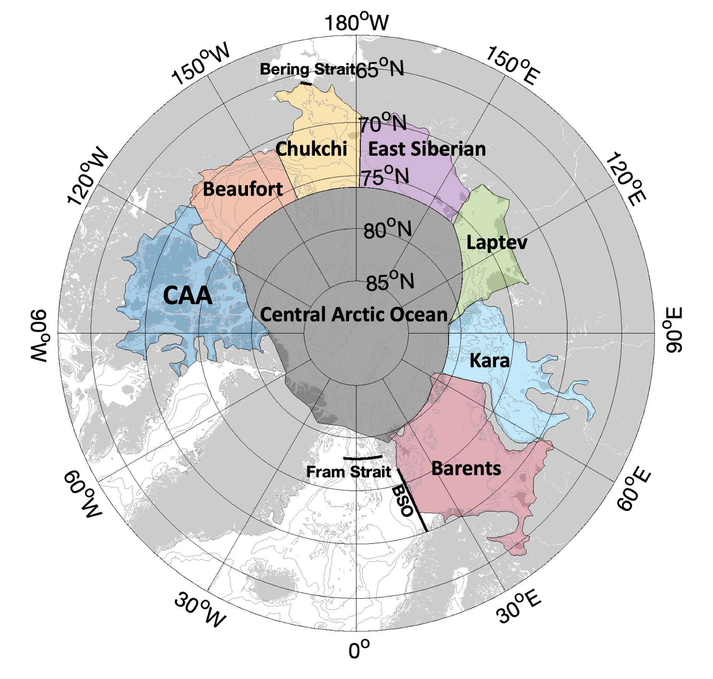
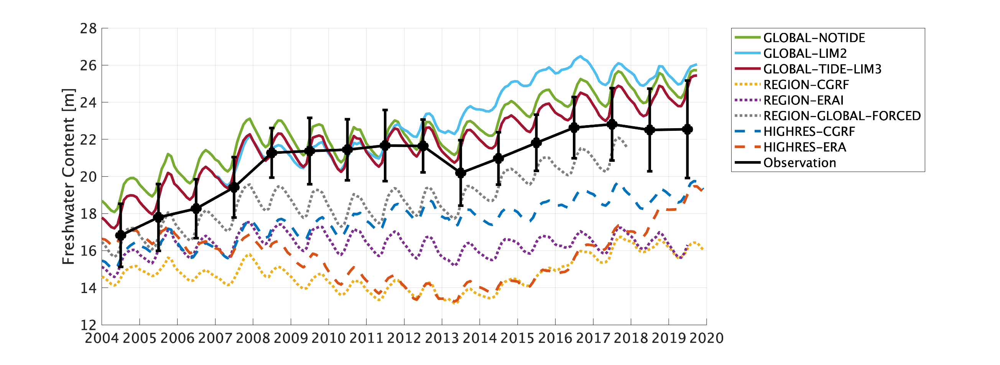
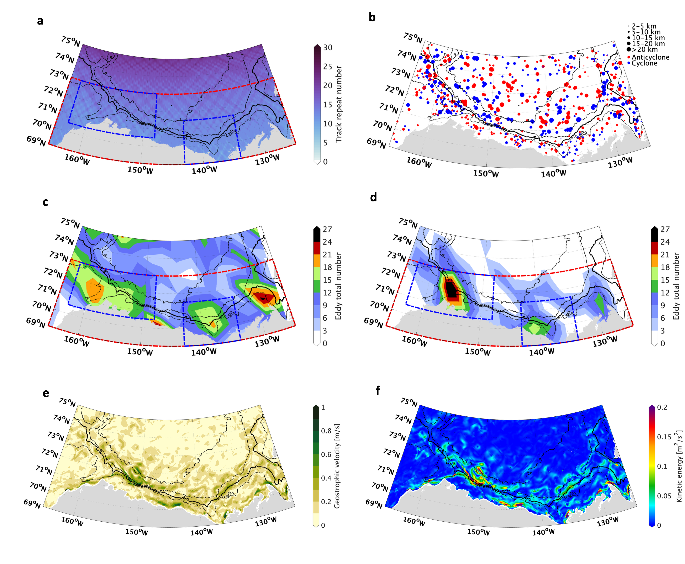
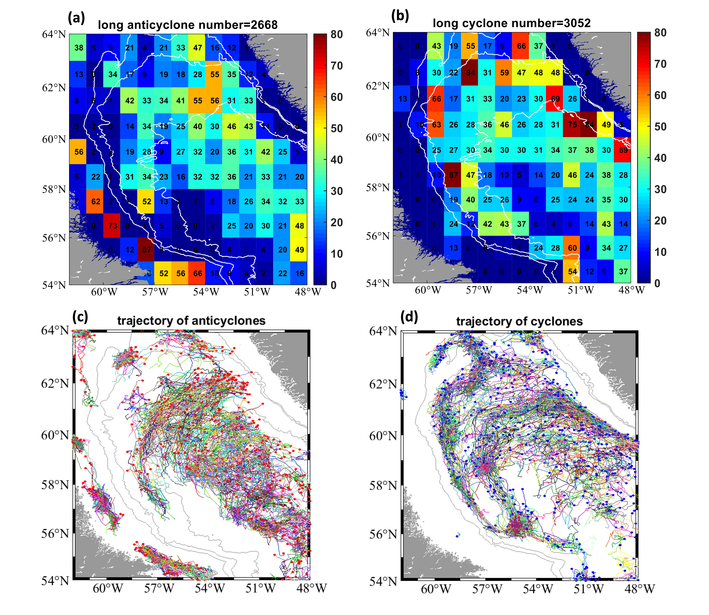
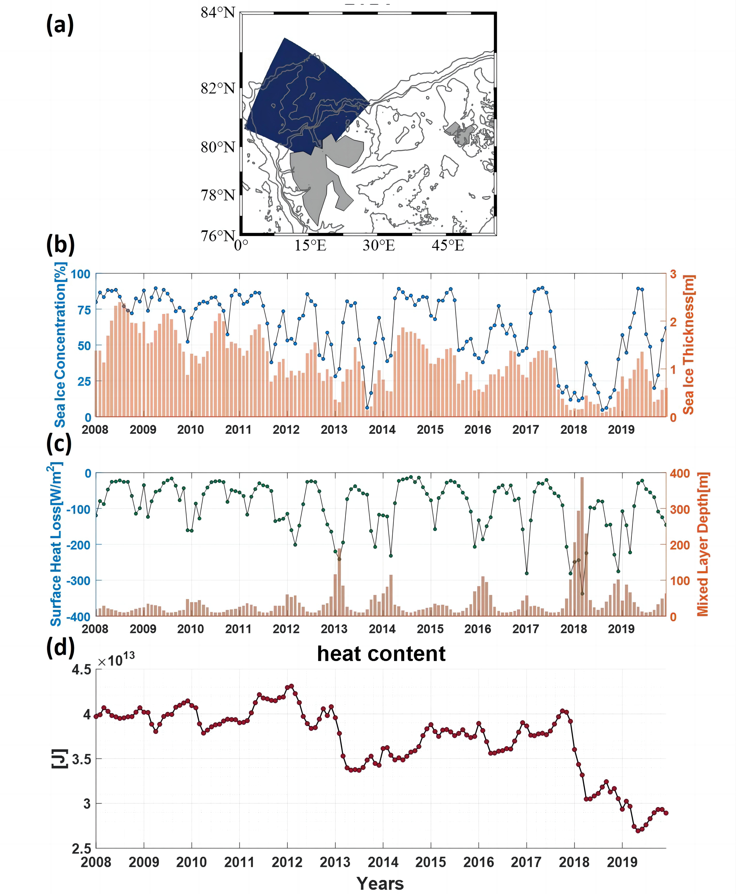
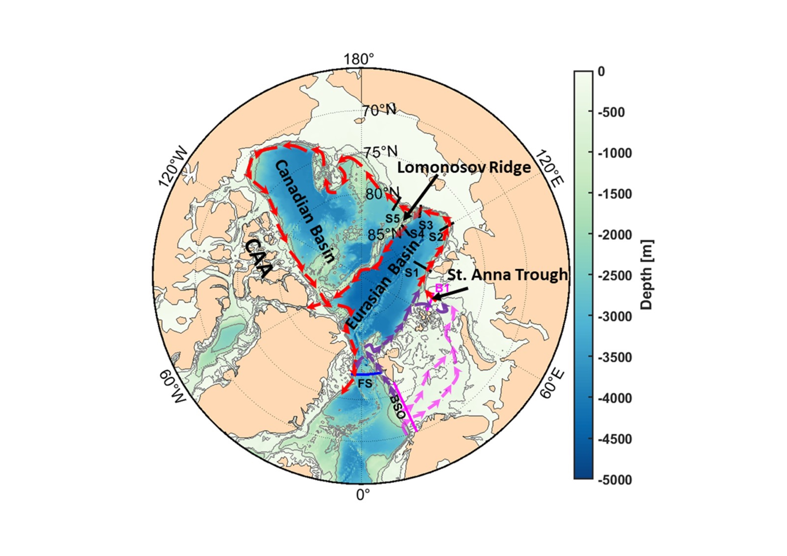
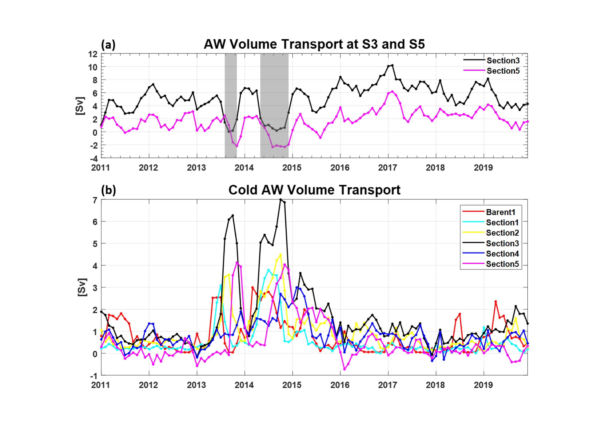

Modelling and observing high-latitude ocean dynamics
The outcomes of my projects have contributed to our understanding of the manifestations,
mechanisms, and ramifications of oceanic changes in the polar and subpolar oceans in a changing climate.
Research interests
Keywords
High-latitude ocean circulationWater mass transformationMesoscale eddiesEddy-sea-ice, air-sea, and glacier-ocean interactionsHeat and freshwater budgetsArctic and Atlantic Meridional Overturning CirculationSouthern Ocean freshwater dynamics
Research topics
PhD work
Upper ocean temperature seasonality in different Arctic shelf seas

Changing seasonal amplitude of sea surface temperature (SST) across Arctic shelf seas.
This study provides the first integrated assessment of the interannual variability, long-term trend, and seasonality of upper ocean temperature across seven Arctic shelf seas, where ocean, atmosphere, and sea ice interact
strongly. With an eddy-permitting global NEMO simulation evaluated against
observational and reanalysis products, I reveal an amplified seasonal cycle of mixed layer temperature (MLT)
in the interior shelf seas, including the East Siberian, Laptev, and Kara Seas. By conducting a mixed-layer heat budget analysis,
I establish that enhanced surface heat flux forcing, rather than horizontal oceanic advection or vertical entrainment, is the dominant driver of the amplified MLT seasonality.
These results underscore the dominant role of atmospheric drivers, relative to oceanic processes, in shaping the seasonality of the Arctic shelf seas.
The amplification of the seasonal cycle can have profound impacts on Arctic ecosystems and the livelihoods of their inhabitants.
Beaufort Gyre freshwater storage and its links to Bering Strait inflow

Beaufort Gyre freshwater content across model experiments and observations.
The Beaufort Gyre (BG) in the Arctic Ocean acts as a reservoir, storing and releasing freshwater.
I apply coupled ocean-sea ice NEMO simulations, with different domains, resolutions, atmospheric forcing, and
runoff datasets, and compare them with extensive observational datasets.
I find that model configuration is the overarching factor in representing freshwater storage in the BG.
In the global simulation with the best freshwater estimate, simulated seasonal freshwater changes are driven by sea ice changes, and
interannual freshwater changes are mainly related to freshwater fluxes across the boundaries of the Beaufort region.
However, improved Bering Strait inflow does not translate into a better simulation of Beaufort Gyre freshwater, whose export to the North Atlantic Ocean has significant global climate implications.
Small mesoscale eddies from SWOT and a km-scale NEMO ocean model (ARC60)

SWOT-observed and ARC60-simulated eddy hotspots in the southern Beaufort Sea.
Mesoscale ocean eddies play an important role in transporting heat, freshwater, and biogeochemical tracers, yet their characteristics in the Arctic remain poorly understood
due to limited observations. Using the Surface Water and Ocean Topography (SWOT) satellite data, my study provides the first high-resolution observations of small mesoscale eddies in the Arctic Ocean, revealing their detailed structures at a much finer scale.
My analysis reveals
three eddy hotspots in the southern Beaufort Sea and shows how
small mesoscale eddies can facilitate shelf-basin exchange of heat and freshwater.
SWOT observations reveal a slightly asymmetric distribution of cyclones and anticyclones in eddy count and properties, while ARC60 (pan-Arctic NEMO configuration with a 1/60° high resolution) shows a strong model bias toward cyclones, with a substantially lower eddy count.
My findings highlight the value of SWOT in evaluating high-resolution ocean models and clarify previously debated properties of BG eddies.
Labrador Sea mesoscale eddies from traditional satellite altimetry

Spatial distribution and trajectories of large long-lived Labrador Sea eddies.
This study employs the Mesoscale Eddy Trajectory Atlas (META) product based on satellite altimetry to conduct a statistical investigation into the eddy landscape in the Labrador Sea,
including its variability, spatial distribution, and eddy characteristics. My study also identifies nonlinear eddies and supports their crucial role in trapping and transporting water properties from the boundary current to the interior.
I conduct a case study of a long-lasting cyclonic eddy by extracting its thermohaline properties and computing its vertical heat flux, which contributes to sea ice melting, from the Multi Observation Global Ocean ARMOR3D product.
The case study underscores the profound impact of this cyclone on vertical heat transport within the marginal ice zone, with its intensity potentially linked to local wind forcing.
MSc work
Anomalous sea ice loss and winter convection north of Svalbard

Modelled sea ice, heat loss, mixed layer depth (MLD), and heat content north of Svalbard.
Deep convection sites, a key component of the Atlantic Meridional Overturning Circulation (AMOC), have begun to shift northward into the Arctic Ocean.
I conduct this study using the regional NEMO configuration, running at 1/12° resolution (ANHA12).
My study identifies a significant reduction in sea ice cover north of Svalbard in 2018 compared with the previous decade, as shown in both ANHA12 and observations.
Open-water conditions allowed intense winter convection over the Yermak Plateau in 2018, because more oceanic heat was lost to the atmosphere without the insulating sea ice cover, causing the mixed layer depth to exceed 400 m.
The sea ice loss is primarily attributed to excess heat brought by Atlantic Water. Anomalous winds prior to the deep convection event forced offshore sea ice movement and contributed to the reduced sea ice cover.
The deep convection event corresponded to enhanced mesoscale eddy activity along the boundary of the Yermak Plateau. The resulting substantial heat loss to the atmosphere also led to a reduction in heat content integrated over the Yermak Plateau region.
Atlantic Water pathways and Cold Atlantic Water pulses


Modelled Atlantic Water and Cold Atlantic Water transport variability.
The thermohaline intrusion of the warm and saline Atlantic Water (AW) into the Arctic Ocean, referred to as “Arctic Atlantification”,
has significant implications for, and feedbacks to, the thermodynamics and dynamics of the Arctic Ocean. The AW enters the Arctic Ocean through two gateways:
Fram Strait (FS) and the Barents Sea Opening (BSO), and the relative strength of these two AW branches dominates the oceanic heat contribution to the Arctic Ocean.
By applying the regional NEMO configuration at 1/12° resolution (ANHA12), I evaluate the interannual and seasonal variability of the AW thermohaline structure at these two gateways.
By drawing sections along the margins of the Arctic Basin, I then investigate how the strength of the AW boundary current changes as it propagates along the continental slope of the Eurasian Basin and travels far enough to enter the Canadian Basin.
I detect two strong Cold Atlantic Water (CAW; with a temperature below 0°C) pulses along the rim of the eastern Eurasian Basin during 2013 and 2014, overturning our understanding that the AW is always warm and saline.
AW transformation analysis and particle-tracking experiments suggest that CAW forms primarily because of intense sea surface cooling of AW in the Barents and Kara Seas.
The CAW pulses progress along the typical AW poleward pathway and cascade while passing through the St. Anna Trough. The CAW eventually results in a significant heat content reduction in the eastern Arctic Basin.